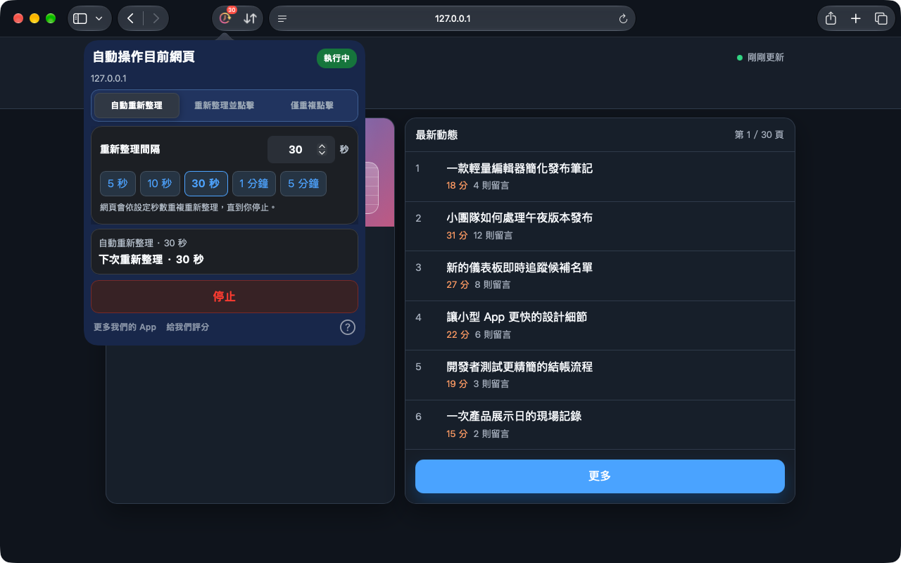
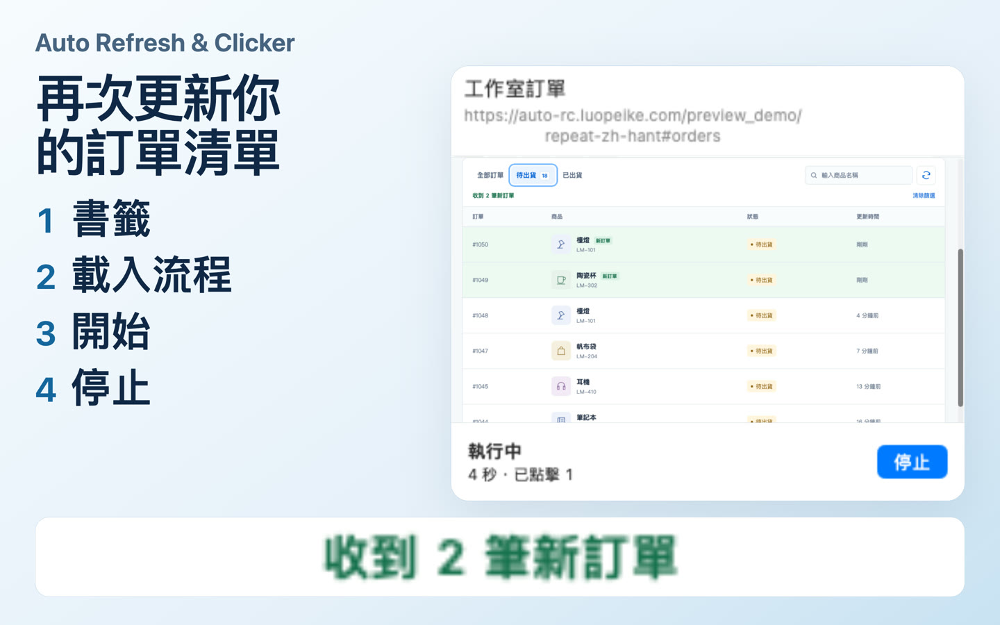
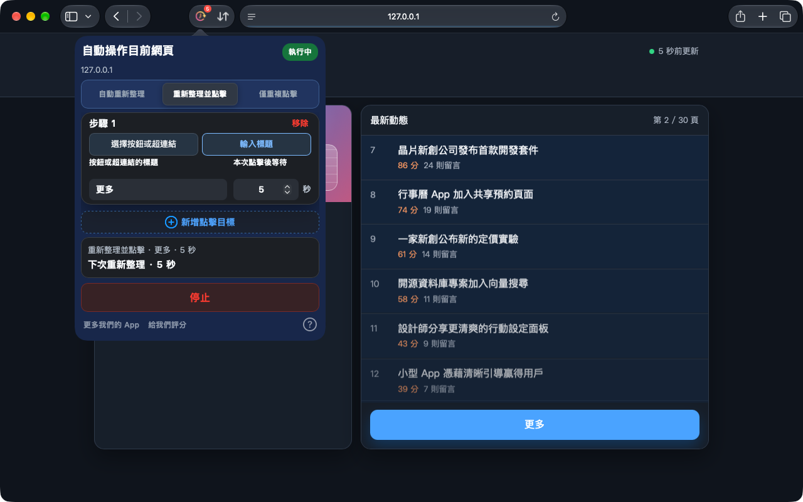
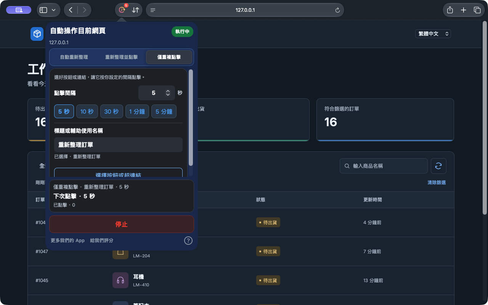

自動重新整理
選擇常用時間或輸入精確間隔，讓看板、庫存與狀態頁面保持更新。
設定自動重新整理從書籤開啟訂單清單，載入儲存的步驟，定時點選清單本身的更新按鈕。可直接在 App 內操作，也能在 Safari 使用延伸功能。


選擇常用時間或輸入精確間隔，讓看板、庫存與狀態頁面保持更新。
設定自動重新整理
直接選取網頁上的按鈕或超連結，也能輸入標題。每次重新整理後，依你的順序點擊，並在每步之後等待。
設定重新整理並點擊
只點擊，不重新載入網頁。圖示按鈕也能直接選取，設好間隔，讓清單自己更新。
設定僅重複點擊iPhone / iPad · Mac
安裝後先開啟 App，在 Safari 設定中啟用擴充功能，並允許存取目標網站。
選好模式，再設定間隔或每步等待時間。需要點擊時，可以直接選擇網頁上的按鈕或連結，也可以輸入標題。
點擊開始，查看執行狀態與倒數計時；隨時停止，或套用變更以更新任務。
在 App 內可為書籤命名，或從瀏覽記錄重新開啟網頁。記錄預設會留在本機，直到你手動刪除。可以暫停記錄或清除瀏覽記錄，書籤及已儲存的流程會保留。
隱私可在 iPhone、iPad 或 Mac 的 App 內開啟網頁，也可在 Safari 分頁中使用延伸功能。桌面版 Chrome 另有擴充功能。
可直接選取沒有文字的圖示，也可輸入按鈕或連結名稱。若名稱中的編號會改變，可啟用萬用字元，用 * 代表變動的部分。找不到唯一可用的相符項目時，任務就會停止。
安裝後先開啟一次 App，再查看 Safari 設定 → 擴充功能。請使用 Safari 15.4 或更新版本。若仍未出現，請聯絡支援，並提供 macOS、Safari、App 版本及安裝來源。
目前 Safari 版本支援修改設定後點擊「套用變更」。任務摘要顯示正在使用的設定，點擊「停止」即可結束。
目前價格與相容性以各商店頁面為準。